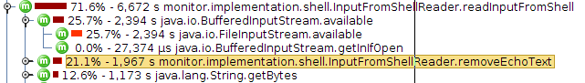

Environment monitor server was initially using 185% of CPU just to tail 5 remote log files.
(on a 2009 Acer netbook with dual core Intel(R) Atom(TM) CPU N270 @ 1.60GHz - 1GB memory)
It was using ProcessBuilder to create a local process running ssh and reading the output stream from this. ProcessBuilder was also used to execute bash to run python scripts to check which applications are running.
jprofiler produced this picture: jprofiler-initial-Screenshot.png
The problem areas were:
The ssh client process was replaced with the pure Java implementation Ganymed SSH-2 for Java.
This proved to be so fast it was also used to run local bash processes. Ganymed made it possible to use a pseudo-terminal. Looking for the terminal prompt speeded up the text processing needed to determine when a command has finished. Previously this was taking 21.1%.

These improvements either caused or made it possible to fix some previously undetected thread blocking problems:
locked by ChunkedOutput after client request to killRunningCommand
threads blocked by a lock owned by their own thread in java.util.logging.ConsoleHandler
Environment monitor server was using just 4% of CPU to tail (and analyse) 5 remote log files.
11.4% - 5,429 ms java.util.logging.Logger.info
which can be turned off.
{kind=link}